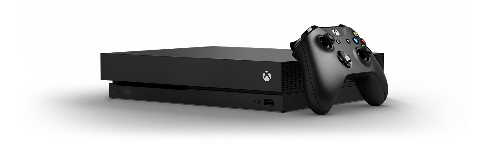

My Top Ten List
- Mac and Cheese
- Drums
- Cats
- Xbox
- Classic Rock
- Avatar: The Last Airbender
- Terminator 2
- Gin/Rummy
- Pandemic (the board game)
- Minecraft
Mac and cheese is my favorite food. Very comforting, tastes good.
More about Mac and CheeseDrums are my favorite instrument. Although hitting a cylinder doesn't sound fun, it adds a lot to songs.
More about Drums
My favorite pet to have around the house is a cat. Many people think they are heartless creatures, but give them time and they'll be your best friend.
More about Cats
The Xbox is my favorite console. It allows me to play with friends from afar and it can be great for any days you don't want to leave the house.
More about the Xbox OneClassic Rock is my favorite genre of music. Full of feeling and gets you going.
More about Classic RockAvatar has been my favorite show recently. It has good characters and a great story.
More about AvatarTerminator 2 is my favorite movie. It's full of unnecessary action because its originally from the 80s.
More abput Terminator 2Gin/Rummy, or Gin, is my favorite card game. It requires both luck and skill and is fun to play with another person.
More about Gin/RummyPandemic is my favorite board game. Unlike other games, Pandemic requires teamwork to reach the objecive in time. It's a good game to play during our global crisis.
More about PandemicMinecraft is best game ever. Still alive after more than a decade.